← 返回阅读库 · 原论文目录
论文讲解阅读文档 · 论文精读 · v246
我受够了Transformer！连续思维机器 CTM
视频时长 00:07:24；讲解文字 2,533 字符；提取讲解画面 150 张。按视频原顺序阅读，每段文字保留时间戳。
文字来自整段视频的自动语音转写，按自然停顿分段，并与 PPT / 论文页面 / 演示画面对齐。未将讲解压缩为摘要；术语、数字和口述公式请结合画面及原论文核对。 阅读稿已校正规范部分明确术语误识别；原始逐字稿和每处修改记录另行保留。
讲解画面为源视频截图（640×360），不是可编辑 PPT 文件。全片按每秒 2 帧扫描内容变化，逐步展开页保留；连续动画保留代表画面。清晰度受源视频限制。
下载完整资料包 · 含离线 HTML、PDF、Word、全部 PPT 画面和字幕。
原论文与材料
Continuous Thought Machines · 下载完整 PDF（44 页）
按时间阅读
00:00:00–00:00:04 · 画面 001
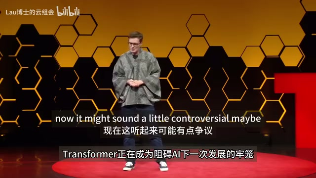
00:00:00–00:00:04 · 画面 001Transformer 正在成为阻碍 AI 下一次发展的牢笼。说出这句话的不是别人，正是 Transformer 架构之父，也是那篇《改变世界》的谷歌论文八位作者之一的 Llion Jones。他在一场万人瞩目的演讲中，向 AI 界当众泼了一盆冷水。
00:00:04–00:00:08 · 画面 002
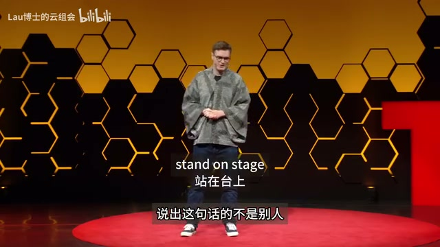
00:00:04–00:00:08 · 画面 00200:00:08–00:00:12 · 画面 003
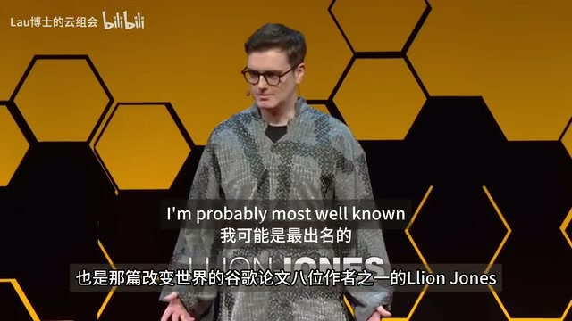
00:00:08–00:00:12 · 画面 00300:00:12–00:00:16 · 画面 004
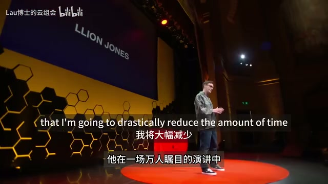
00:00:12–00:00:16 · 画面 00400:00:16–00:00:20 · 画面 005
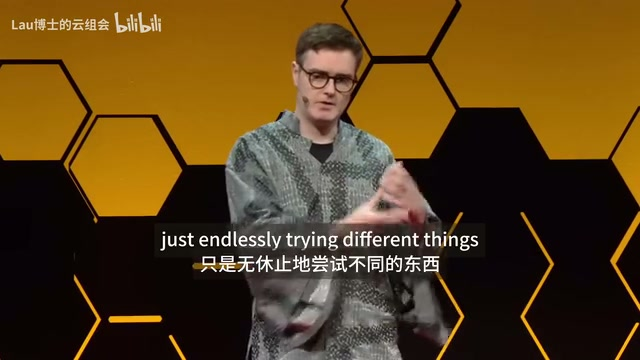
00:00:16–00:00:20 · 画面 005视频里 Llion Jones 提到了一个全新的架构连续思维机器。据说它会取代 Transformer，成为下一个 AI 时代的基础架构。那本期视频，Lau 博士将和大家一起探秘这篇或许在不久后将改变世界的论文，来看看它究竟只是噱头还是真的有东西。话不多说，一起进入本期云组会。
00:00:20–00:00:24 · 画面 006
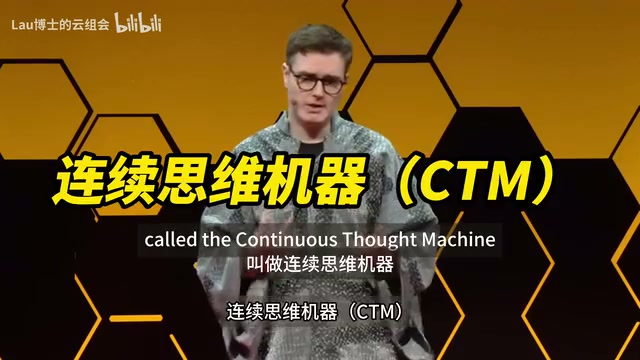
00:00:20–00:00:24 · 画面 00600:00:24–00:00:28 · 画面 007
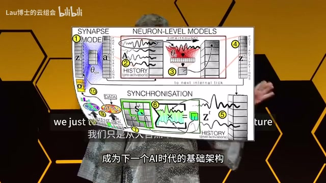
00:00:24–00:00:28 · 画面 00700:00:28–00:00:31 · 画面 008
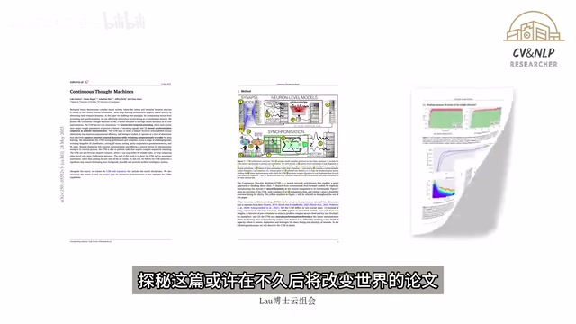
00:00:28–00:00:31 · 画面 00800:00:31–00:00:35 · 画面 009
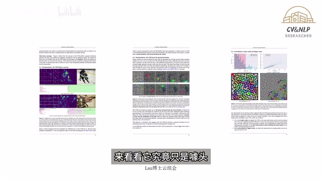
00:00:31–00:00:35 · 画面 00900:00:35–00:00:39 · 画面 010
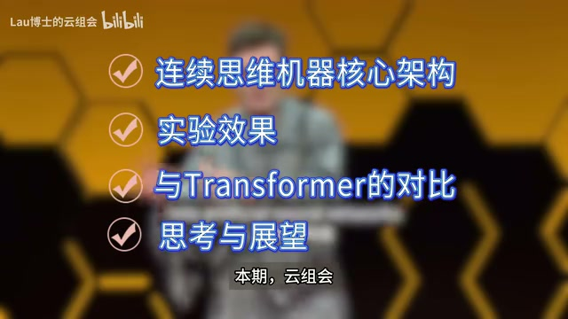
00:00:35–00:00:39 · 画面 01000:00:39–00:00:42 · 画面 011
00:00:39–00:00:42 · 画面 01100:00:42–00:00:43 · 画面 012
00:00:42–00:00:43 · 画面 01200:00:43–00:00:45 · 画面 013
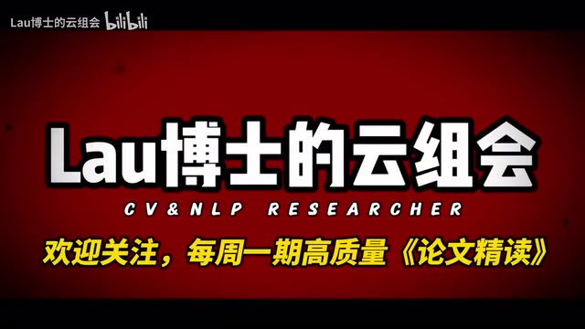
00:00:43–00:00:45 · 画面 01300:00:45–00:00:49 · 画面 014
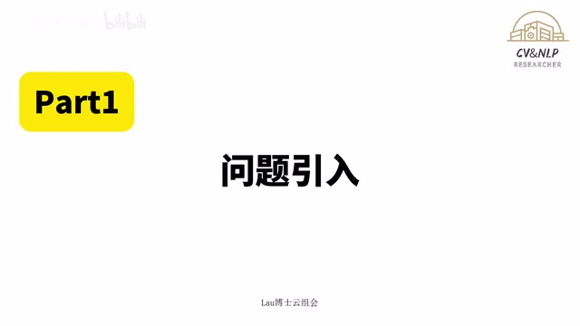
00:00:45–00:00:49 · 画面 014首先问大家一个问题，我们现在的 AI 模型和真正的人脑差距在哪里？表面上看，大模型能写诗、能编程、能解题，好像很聪明。但仔细想想，他们做决定往往是一步到位的。输入一张图，网络跑一遍，直接输出分类结果，中间发生了什么？黑箱。
00:00:49–00:00:53 · 画面 015
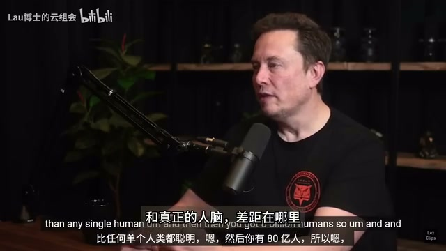
00:00:49–00:00:53 · 画面 01500:00:53–00:00:54 · 画面 016
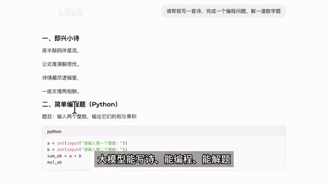
00:00:53–00:00:54 · 画面 01600:00:54–00:00:55 · 画面 017
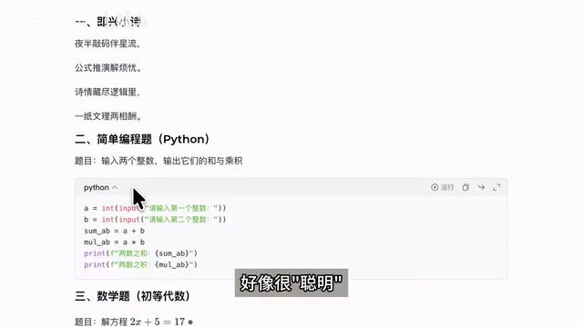
00:00:54–00:00:55 · 画面 01700:00:55–00:00:58 · 画面 018
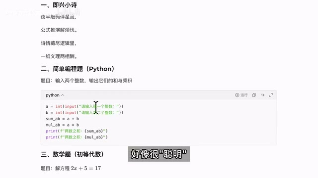
00:00:55–00:00:58 · 画面 01800:00:58–00:01:02 · 画面 019
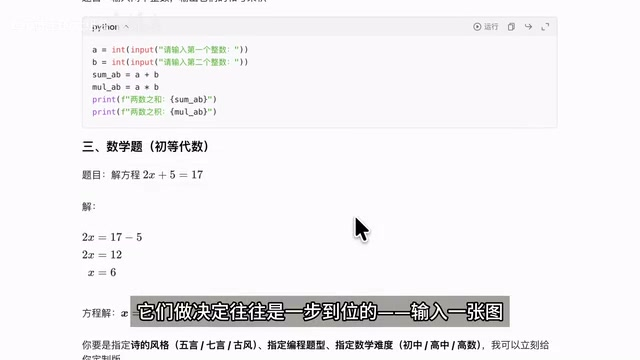
00:00:58–00:01:02 · 画面 01900:01:02–00:01:06 · 画面 020
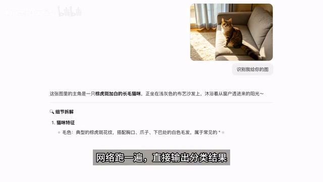
00:01:02–00:01:06 · 画面 020而人脑不一样，我们看到复杂的问题会停顿、会观察、会反复推敲。这个反复推敲的过程其实就是时间维度上的动态思考。传统的人工神经网络从上个世纪 80 年代至今，神经元的模型基本就没变，只关注了有没有激活，却忽略了什么时候激活和其他神经元怎么配合。
00:01:06–00:01:10 · 画面 021
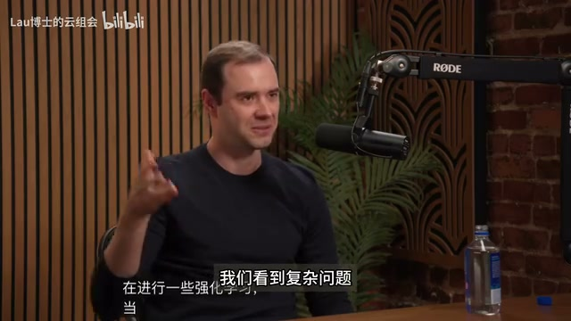
00:01:06–00:01:10 · 画面 02100:01:10–00:01:14 · 画面 022
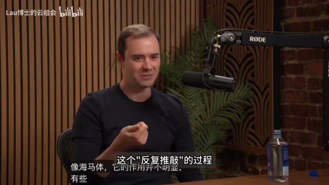
00:01:10–00:01:14 · 画面 02200:01:14–00:01:18 · 画面 023
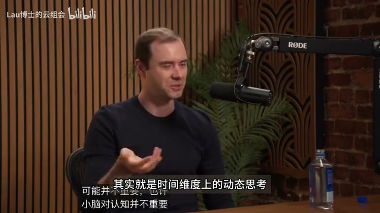
00:01:14–00:01:18 · 画面 02300:01:18–00:01:22 · 画面 024
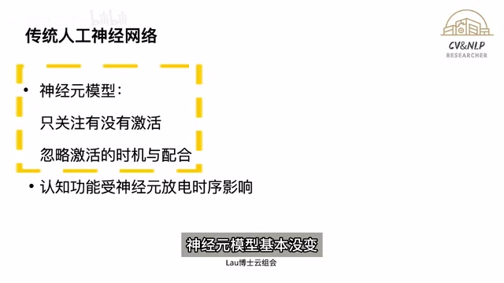
00:01:18–00:01:22 · 画面 02400:01:22–00:01:23 · 画面 025
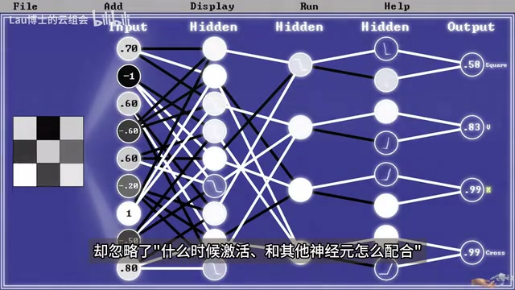
00:01:22–00:01:23 · 画面 02500:01:23–00:01:27 · 画面 026
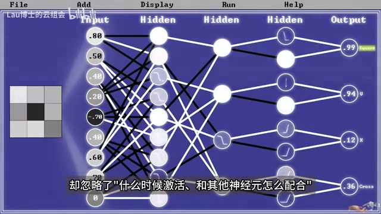
00:01:23–00:01:27 · 画面 026而神经科学早就发现，生物大脑里神经元放电的精确时序对认知功能至关重要。所以 Sakana AI 这次的核心思路很清晰：既然时间这么重要，那我们能不能把时间重新加回 AI 模型里呢？因此新架构就出现了连续思维机器。名字听起来有点抽象，其实核心就两点。
00:01:27–00:01:29 · 画面 027
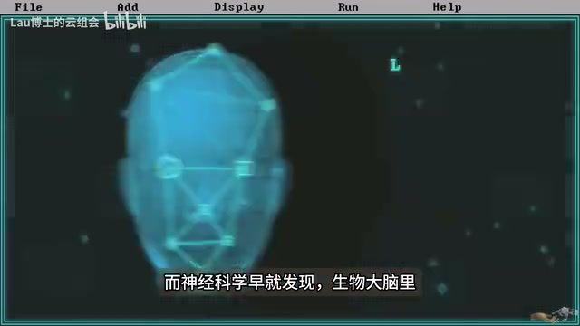
00:01:27–00:01:29 · 画面 02700:01:29–00:01:32 · 画面 028
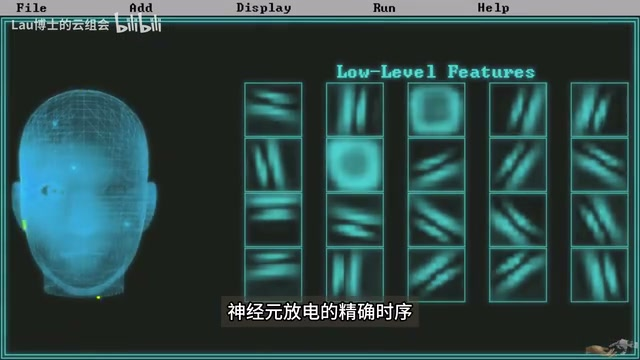
00:01:29–00:01:32 · 画面 02800:01:32–00:01:40 · 画面 029
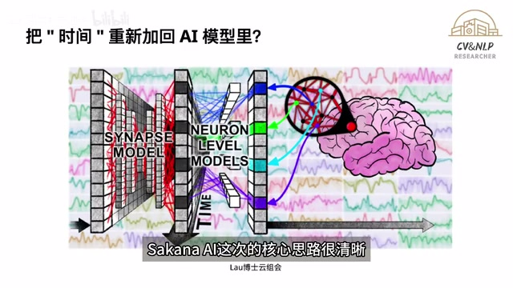
00:01:32–00:01:40 · 画面 02900:01:40–00:01:43 · 画面 030
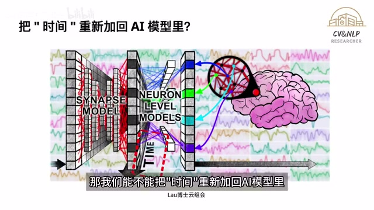
00:01:40–00:01:43 · 画面 03000:01:43–00:01:45 · 画面 031
00:01:43–00:01:45 · 画面 03100:01:45–00:01:49 · 画面 032
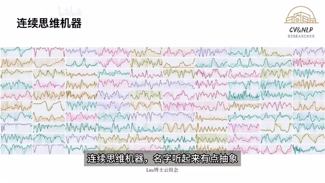
00:01:45–00:01:49 · 画面 032第一，让神经元记住自己的历史。传统的神经元只输出当前状态，而 CTM 里的神经元能访问自己过去一段时间的行为记录，据此调整下一步的输出。简单讲就是让神经元学会反思。第二，用神经元同步作为推理机制。模型不再依赖单一的前向传播，而是让大量的神经元通过时间上的协调配合，动态涌现出解题策略。这种同步模式更接近生物大脑的工作方式。
00:01:49–00:01:50 · 画面 033
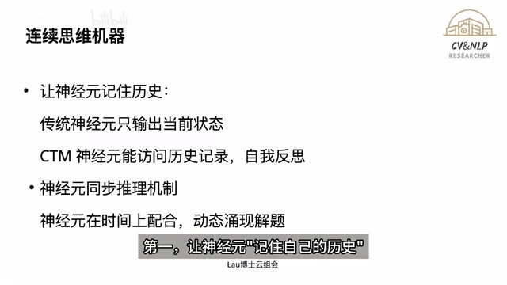
00:01:49–00:01:50 · 画面 03300:01:50–00:01:54 · 画面 034
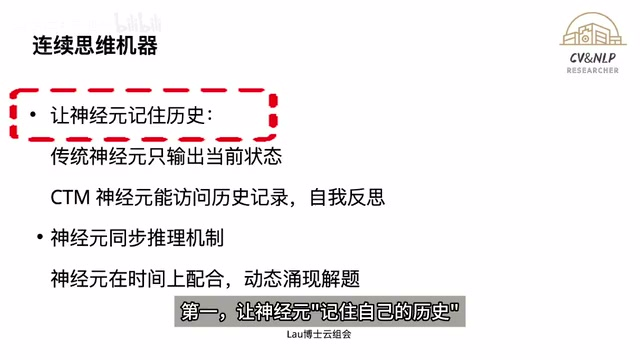
00:01:50–00:01:54 · 画面 03400:01:54–00:01:58 · 画面 035
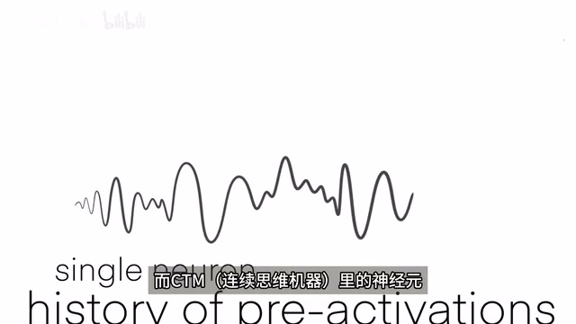
00:01:54–00:01:58 · 画面 03500:01:58–00:01:59 · 画面 036
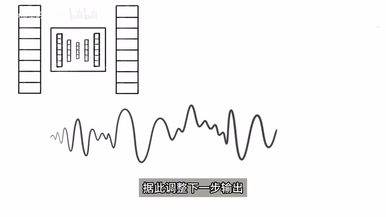
00:01:58–00:01:59 · 画面 03600:01:59–00:02:03 · 画面 037
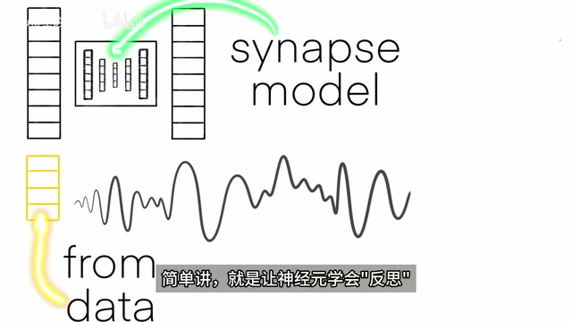
00:01:59–00:02:03 · 画面 03700:02:03–00:02:07 · 画面 038
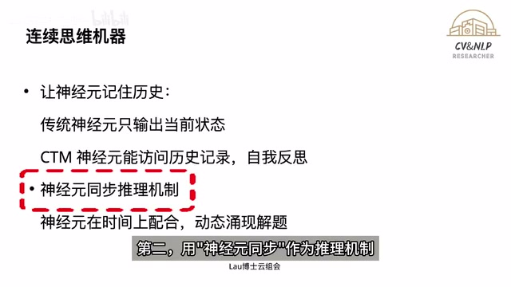
00:02:03–00:02:07 · 画面 03800:02:07–00:02:08 · 画面 039
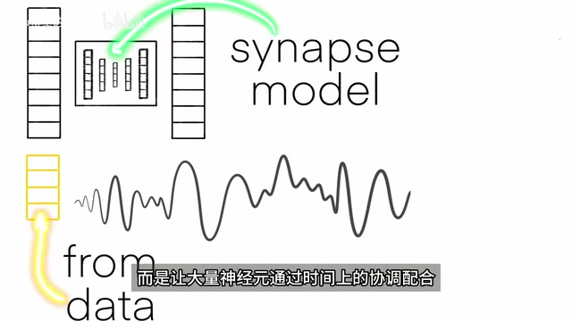
00:02:07–00:02:08 · 画面 03900:02:08–00:02:09 · 画面 040
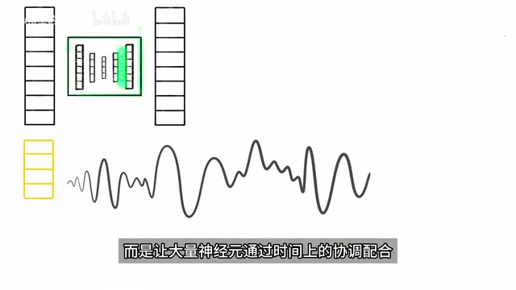
00:02:08–00:02:09 · 画面 04000:02:09–00:02:12 · 画面 041
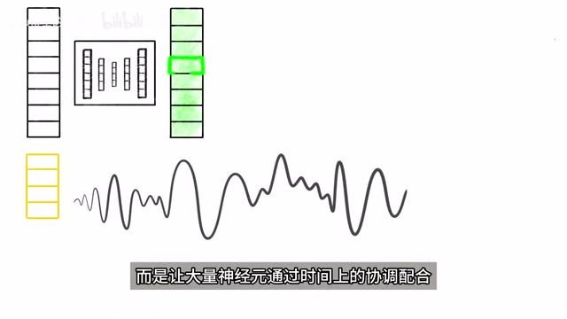
00:02:09–00:02:12 · 画面 04100:02:12–00:02:13 · 画面 042
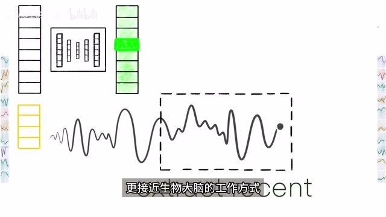
00:02:12–00:02:13 · 画面 04200:02:13–00:02:16 · 画面 043
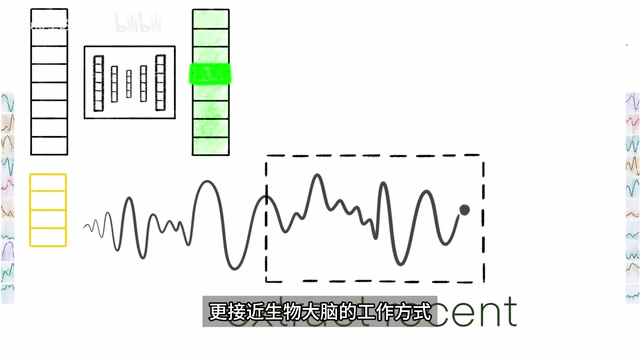
00:02:13–00:02:16 · 画面 043不过大家注意这里不是对大脑严格仿真只是一种受启发的工程创新研究者把这种新方式叫做连续思维因为模型在内部有一个独立的思考时间轴可以一步的多步驻的处理信息而不是被动的等待输入结束才输出答案我们用一个比喻来理解传统的 Transformer 像一位速算高手题目一来立刻心算出答案快但过程不好追踪
00:02:16–00:02:17 · 画面 044
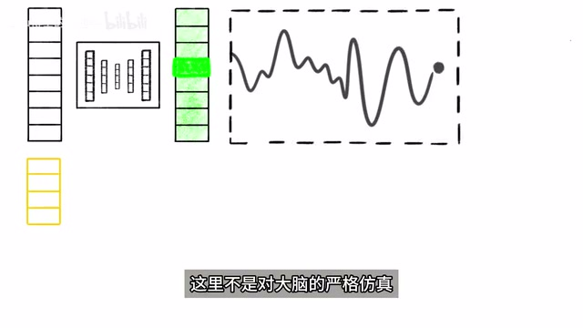
00:02:16–00:02:17 · 画面 04400:02:17–00:02:21 · 画面 045
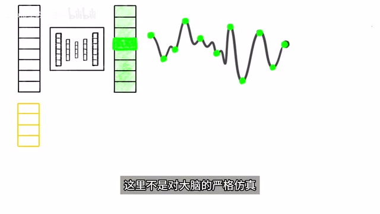
00:02:17–00:02:21 · 画面 04500:02:21–00:02:23 · 画面 046
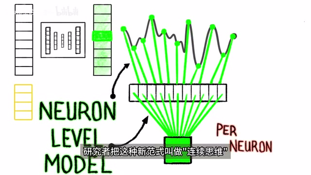
00:02:21–00:02:23 · 画面 04600:02:23–00:02:27 · 画面 047
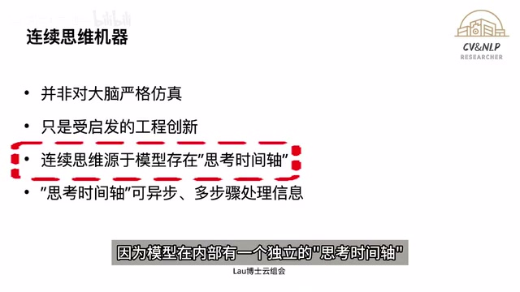
00:02:23–00:02:27 · 画面 04700:02:27–00:02:31 · 画面 048
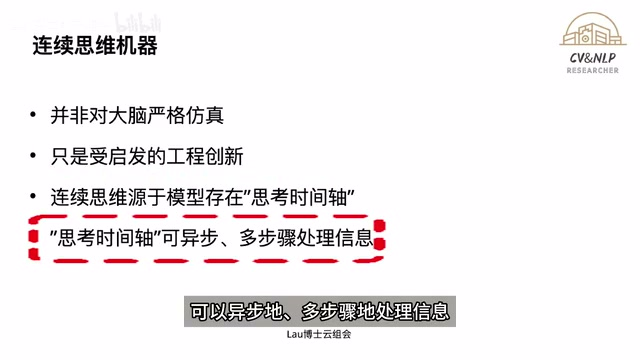
00:02:27–00:02:31 · 画面 04800:02:31–00:02:32 · 画面 049
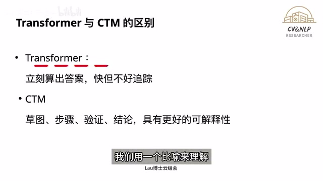
00:02:31–00:02:32 · 画面 04900:02:32–00:02:36 · 画面 050
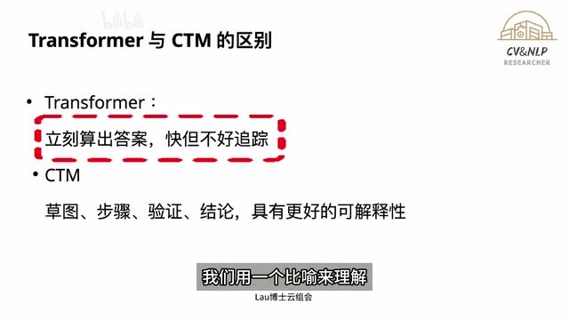
00:02:32–00:02:36 · 画面 05000:02:36–00:02:38 · 画面 051
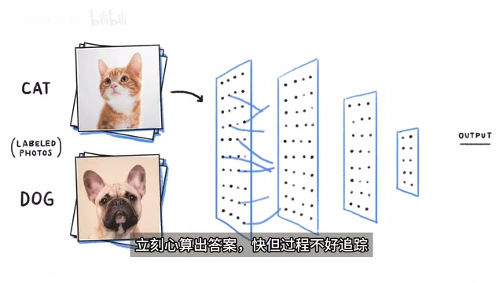
00:02:36–00:02:38 · 画面 05100:02:38–00:02:40 · 画面 052
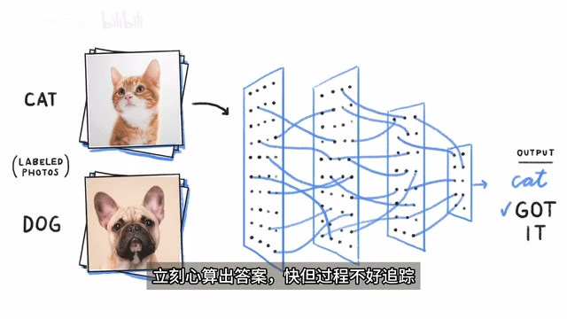
00:02:38–00:02:40 · 画面 052而 CTM 则是更加的沉稳，拿到问题后会先在脑海里画草图、列步骤、反复验证，最后才给出结论。可解释性也会更好一些。具体到架构上，CTM 的每个神经元都维护两段历史记录：预激活历史和后激活历史。模型通过学习决定哪些历史时刻的信息值值得参考，并计算神经元之间的同步关系。这些同步关系最终凝结成了模型的潜在表征，用于生成输出。
00:02:40–00:02:41 · 画面 053
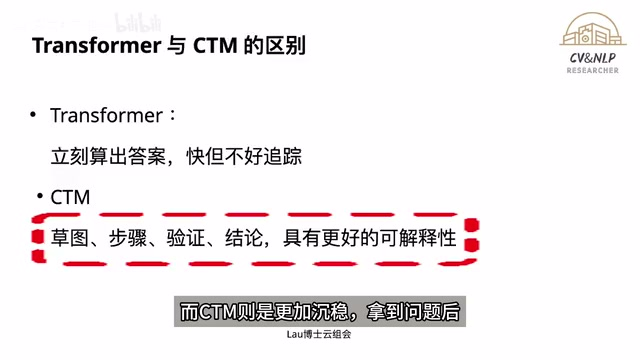
00:02:40–00:02:41 · 画面 05300:02:41–00:02:42 · 画面 054
00:02:41–00:02:42 · 画面 05400:02:42–00:02:45 · 画面 055
00:02:42–00:02:45 · 画面 05500:02:45–00:02:47 · 画面 056
00:02:45–00:02:47 · 画面 05600:02:47–00:02:48 · 画面 057
00:02:47–00:02:48 · 画面 05700:02:48–00:02:49 · 画面 058
00:02:48–00:02:49 · 画面 05800:02:49–00:02:54 · 画面 059
00:02:49–00:02:54 · 画面 05900:02:54–00:02:56 · 画面 060
00:02:54–00:02:56 · 画面 06000:02:56–00:02:57 · 画面 061
00:02:56–00:02:57 · 画面 06100:02:57–00:03:00 · 画面 062
00:02:57–00:03:00 · 画面 06200:03:00–00:03:02 · 画面 063
00:03:00–00:03:02 · 画面 06300:03:02–00:03:06 · 画面 064
00:03:02–00:03:06 · 画面 06400:03:06–00:03:09 · 画面 065
00:03:06–00:03:09 · 画面 065听起来有点复杂，没关系，待会我们还会对这个架构从输入到输出从头再过一次。在此之前，我们不妨先来看看实验的可视化结果。第一个任务：走迷宫。给 CTM 一张 2D 的迷宫图，让它输出走出迷宫的步骤。传统的模型可能直接拆一条路径，但 CTM 的表现很不一样，它的注意力会像人一样沿着迷宫的路一步步的走过去。
00:03:09–00:03:11 · 画面 066
00:03:09–00:03:11 · 画面 06600:03:11–00:03:14 · 画面 067
00:03:11–00:03:14 · 画面 06700:03:14–00:03:15 · 画面 068
00:03:14–00:03:15 · 画面 06800:03:15–00:03:19 · 画面 069
00:03:15–00:03:19 · 画面 06900:03:19–00:03:22 · 画面 070
00:03:19–00:03:22 · 画面 07000:03:22–00:03:25 · 画面 071
00:03:22–00:03:25 · 画面 07100:03:25–00:03:29 · 画面 072
00:03:25–00:03:29 · 画面 07200:03:29–00:03:32 · 画面 073
00:03:29–00:03:32 · 画面 07300:03:32–00:03:34 · 画面 074
00:03:32–00:03:34 · 画面 07400:03:34–00:03:38 · 画面 075
00:03:34–00:03:38 · 画面 075更难得的是，这种行为不是人为设计的，而是模型自己学出来的。而且允许他多想几步，路径的规划就更稳健了。
00:03:38–00:03:41 · 画面 076
00:03:38–00:03:41 · 画面 07600:03:41–00:03:43 · 画面 077
00:03:41–00:03:43 · 画面 07700:03:43–00:03:47 · 画面 078
00:03:43–00:03:47 · 画面 078第二个任务：图像分类。在 ImageNet 上，传统的模型一步分类，CTM 则会多步观察图片不同的区域。比如识别大猩猩，它的注意力会依次的聚焦在眼睛、鼻子、嘴巴，和人类的视觉扫描的模式高度相似。而且模型还能自适应的调整思考时长，简单的图片快速决策，复杂的图片多花点时间，既提升了准确率，又节省算力。
00:03:47–00:03:51 · 画面 079
00:03:47–00:03:51 · 画面 07900:03:51–00:03:55 · 画面 080
00:03:51–00:03:55 · 画面 08000:03:55–00:03:59 · 画面 081
00:03:55–00:03:59 · 画面 08100:03:59–00:04:03 · 画面 082
00:03:59–00:04:03 · 画面 08200:04:03–00:04:07 · 画面 083
00:04:03–00:04:07 · 画面 08300:04:07–00:04:11 · 画面 084
00:04:07–00:04:11 · 画面 084这些可视化的结果让模型的推理过程变得可解释、可追踪，这对调试、对其建立信任都是很有价值的。想象一下，CTM 内部有一群小神经元在开会，他们要协作解决一个问题。整个过程分九步，我们一步步来看。第一步，跨神经元交流。每个神经元先通过蓝线权重互相传递信号，就像同事之间先交换意见，产生一个初步的想法。这叫预激活。
00:04:11–00:04:15 · 画面 085
00:04:11–00:04:15 · 画面 08500:04:15–00:04:19 · 画面 086
00:04:15–00:04:19 · 画面 08600:04:19–00:04:20 · 画面 087
00:04:19–00:04:20 · 画面 08700:04:20–00:04:28 · 画面 088
00:04:20–00:04:28 · 画面 08800:04:28–00:04:29 · 画面 089
00:04:28–00:04:29 · 画面 08900:04:29–00:04:34 · 画面 090
00:04:29–00:04:34 · 画面 09000:04:34–00:04:35 · 画面 091
00:04:34–00:04:35 · 画面 09100:04:35–00:04:39 · 画面 092
00:04:35–00:04:39 · 画面 092第二步，记笔记的习惯。每个神经元都有小本本，会把每次的初步想法记下来，形成预激活历史记录。第三步，自我反思。神经元翻看自己最近的笔记，用红线权重，这个个人决策模型决定下一步怎么表达，这就产生了后激活，也就是成熟的观点。第四步，持续复盘。成熟观点也不会说完就忘，同样会被记录下来，形成后激活历史。
00:04:39–00:04:40 · 画面 093
00:04:39–00:04:40 · 画面 09300:04:40–00:04:45 · 画面 094
00:04:40–00:04:45 · 画面 09400:04:45–00:04:46 · 画面 095
00:04:45–00:04:46 · 画面 09500:04:46–00:04:47 · 画面 096
00:04:46–00:04:47 · 画面 09600:04:47–00:04:52 · 画面 097
00:04:47–00:04:52 · 画面 09700:04:52–00:04:53 · 画面 098
00:04:52–00:04:53 · 画面 09800:04:53–00:04:58 · 画面 099
00:04:53–00:04:58 · 画面 09900:04:58–00:05:00 · 画面 100
00:04:58–00:05:00 · 画面 10000:05:00–00:05:05 · 画面 101
00:05:00–00:05:05 · 画面 10100:05:05–00:05:06 · 画面 102
00:05:05–00:05:06 · 画面 102到这里，如果觉得信息量有点大没关系，你只需要记住神经元会记笔记、加会思考，就能理解核心思路了。第五步 ，找节奏搭子，模型会分析所有神经元的成熟观点历史，计算谁和谁的节奏合拍，生成一张同步矩阵，就像音乐里找和声的搭档。第六步 ，组队输出，从同步矩阵里挑出配合最好的神经元队，把它们的信号融合，形成了潜在表征，也就是模型对问题的核心理解。
00:05:06–00:05:10 · 画面 103
00:05:06–00:05:10 · 画面 10300:05:10–00:05:14 · 画面 104
00:05:10–00:05:14 · 画面 10400:05:14–00:05:19 · 画面 105
00:05:14–00:05:19 · 画面 10500:05:19–00:05:20 · 画面 106
00:05:19–00:05:20 · 画面 10600:05:20–00:05:24 · 画面 107
00:05:20–00:05:24 · 画面 10700:05:24–00:05:25 · 画面 108
00:05:24–00:05:25 · 画面 10800:05:25–00:05:30 · 画面 109
00:05:25–00:05:30 · 画面 10900:05:30–00:05:31 · 画面 110
00:05:30–00:05:31 · 画面 11000:05:31–00:05:35 · 画面 111
00:05:31–00:05:35 · 画面 111第七步 ，生成答案，用这些核心理解，模型就能输出最终的结果了。第八步 ，动态调制，这里有一个巧思，输出不是终点，模型会用交叉注意力机制，让原始数据和当前的思考结果互相校准，就像边写答案边回头检查题目。第九步 ，进入下一轮，调制后的新信息会和神经元的成熟观点拼接在一起，作为下一个思考时钟周期的输入。
00:05:35–00:05:40 · 画面 112
00:05:35–00:05:40 · 画面 11200:05:40–00:05:49 · 画面 113
00:05:40–00:05:49 · 画面 11300:05:49–00:05:52 · 画面 114
00:05:49–00:05:52 · 画面 11400:05:52–00:05:53 · 画面 115
00:05:52–00:05:53 · 画面 11500:05:53–00:05:58 · 画面 116
00:05:53–00:05:58 · 画面 11600:05:58–00:05:59 · 画面 117
00:05:58–00:05:59 · 画面 11700:05:59–00:06:04 · 画面 118
00:05:59–00:06:04 · 画面 118简单讲就是带着上轮的经验继续深化思考。可能有同学会问，这和 Transformer 到底什么关系？简单说，Transformer 的核心是自注意力机制，通过全局关联建模序列依赖，而 CTM 的核心是神经元动态同步，通过时间维度上的协调实现推理，两者不是替代关系，更像是不同的思路探索。
00:06:04–00:06:05 · 画面 119
00:06:04–00:06:05 · 画面 11900:06:05–00:06:06 · 画面 120
00:06:05–00:06:06 · 画面 12000:06:06–00:06:11 · 画面 121
00:06:06–00:06:11 · 画面 12100:06:11–00:06:12 · 画面 122
00:06:11–00:06:12 · 画面 12200:06:12–00:06:14 · 画面 123
00:06:12–00:06:14 · 画面 12300:06:14–00:06:15 · 画面 124
00:06:14–00:06:15 · 画面 12400:06:15–00:06:18 · 画面 125
00:06:15–00:06:18 · 画面 12500:06:18–00:06:20 · 画面 126
00:06:18–00:06:20 · 画面 12600:06:20–00:06:27 · 画面 127
00:06:20–00:06:27 · 画面 127值得注意的是，CTM 目前主要在序列的决策、视觉推理等任务上展示了潜力，尚未在大语言模型的规模上进行验证，但它提供了一个新的方向。如果让 AI 学会慢思考，会不会更接近人类的认知方式？
00:06:27–00:06:29 · 画面 128
00:06:27–00:06:29 · 画面 12800:06:29–00:06:31 · 画面 129
00:06:29–00:06:31 · 画面 12900:06:31–00:06:35 · 画面 130
00:06:31–00:06:35 · 画面 13000:06:35–00:06:36 · 画面 131
00:06:35–00:06:36 · 画面 13100:06:36–00:06:38 · 画面 132
00:06:36–00:06:38 · 画面 13200:06:38–00:06:40 · 画面 133
00:06:38–00:06:40 · 画面 13300:06:40–00:06:41 · 画面 134
00:06:40–00:06:41 · 画面 134最后，了解个人看法，深度学习的飞跃本就源于对大脑的朴素模仿，但过去十年工程效率优先，模型越来越实用，却离生物机制越来越远。CTM 的尝试像是轻轻的推了一下子上门，我们是否可以在保持工程可行性的前提下，重新引入一些神经科学的洞见？
00:06:41–00:06:43 · 画面 135
00:06:41–00:06:43 · 画面 13500:06:43–00:06:47 · 画面 136
00:06:43–00:06:47 · 画面 13600:06:47–00:06:51 · 画面 137
00:06:47–00:06:51 · 画面 13700:06:51–00:06:52 · 画面 138
00:06:51–00:06:52 · 画面 13800:06:52–00:06:54 · 画面 139
00:06:52–00:06:54 · 画面 13900:06:54–00:06:56 · 画面 140
00:06:54–00:06:56 · 画面 14000:06:56–00:06:59 · 画面 141
00:06:56–00:06:59 · 画面 14100:06:59–00:07:01 · 画面 142
00:06:59–00:07:01 · 画面 142但这条路还很长，神经元同步的计算开销、大规模的训练的稳定性与现有的生态的兼容性都是待解的问题。但创新往往就藏在这些不一样的尝试里。OK，以上就是本期云组会的全部内容。如果对理由所启发，麻烦三连，这对我们真的很有帮助。也欢迎关注我们，每周带大家追踪前沿研究，下期云组会再见。
00:07:01–00:07:03 · 画面 143
00:07:01–00:07:03 · 画面 14300:07:03–00:07:06 · 画面 144
00:07:03–00:07:06 · 画面 14400:07:06–00:07:08 · 画面 145
00:07:06–00:07:08 · 画面 14500:07:08–00:07:12 · 画面 146
00:07:08–00:07:12 · 画面 14600:07:12–00:07:16 · 画面 147
00:07:12–00:07:16 · 画面 14700:07:16–00:07:20 · 画面 148
00:07:16–00:07:20 · 画面 14800:07:20–00:07:24 · 画面 149
00:07:20–00:07:24 · 画面 14900:07:24–00:07:24 · 画面 150
00:07:24–00:07:24 · 画面 150转写与来源说明 · 0 个自动复核提示
保留 19 个原始语音片段，0 个片段触发自动复核提示。提示仅用于定位可能的术语、重复或识别问题，不等于已确认错误。
讲解画面为源视频截图（640×360），不是可编辑 PPT 文件。全片按每秒 2 帧扫描内容变化，逐步展开页保留；连续动画保留代表画面。清晰度受源视频限制。
原视频：paper/合集_2026-10-16_论文精读/我受够了Transformer！连续思维机器 CTM【论文精读】.mp4
SHA-256：e7fac58e678293e813a8e194861a7006dd1485af97ebcbf7f18270755c7cebe0
全文按视频语音与画面制作。原论文可从上方链接下载；完整资料包保留全文、原始逐字稿、字幕和校对记录。